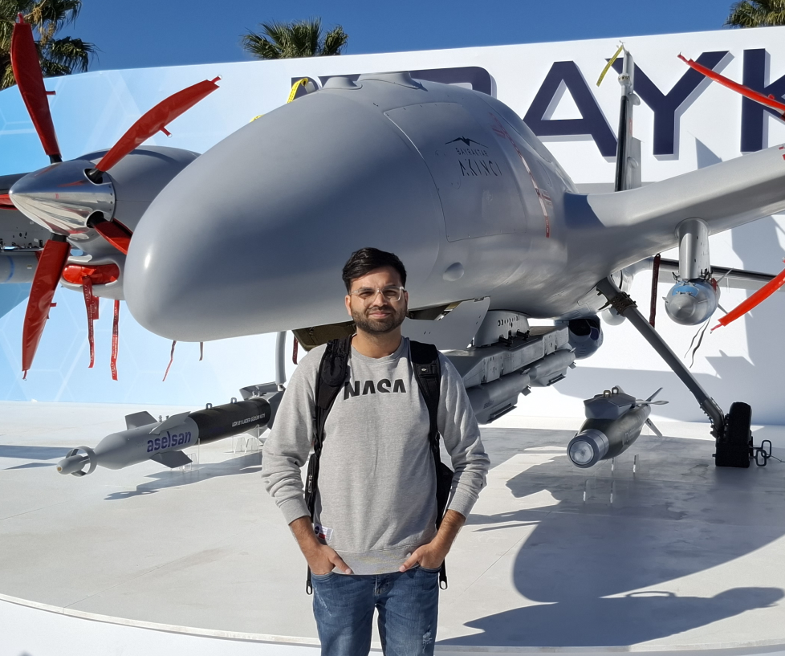
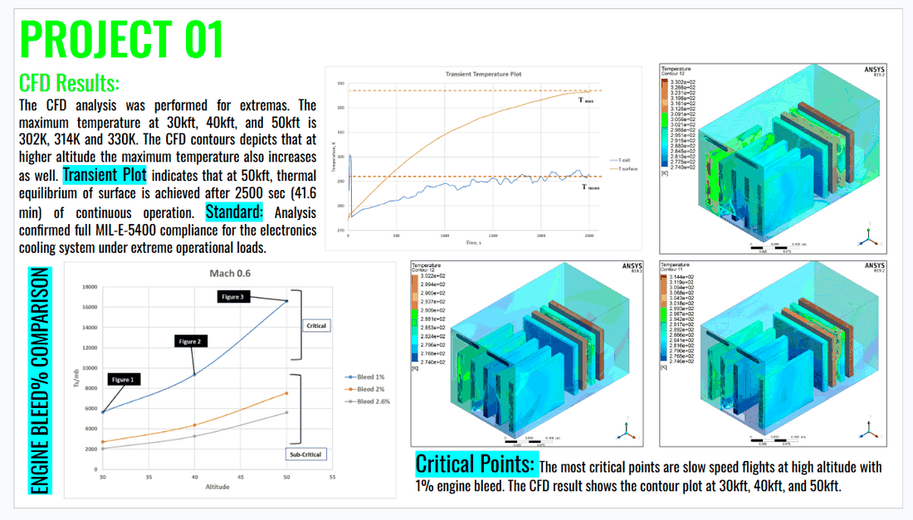

Current role
Aerodynamics Engineer, Baykar
I'm Mushabbar Husnain Noor. I work on aerodynamics, aeroelasticity and heat transfer problems in UAVs, turbomachinery, ground vehicles and avionics hardware. I'm an Aerodynamics Engineer at Baykar Technologies, and I take on research collaboration and consultancy work independently under Mushabbar.Noor.

The same work reaches three sorts of people: research collaborators, hiring teams, and companies that need an analyst from outside.
Peer-reviewed work on aerothermal LRU qualification, plus current interests in PINNs, reduced-order models and digital twins. Happy to talk about collaboration or supervision.
Read the publicationsCase studies in UAV aerodynamics, aeroelastic flutter, small-scale turbomachinery and ground-vehicle CFD. Each one states the method, the tools and the numbers that came out.
See the case studiesFixed-scope CFD, FSI, structural and thermal work for teams who want an analysis they can check and defend, with the assumptions written down.
See engagement models
Thermal qualification of high-flux electronics in a controlled bay, cooled by engine bleed air and validated to MIL-E-5400.

Response-surface thermal qualification validated against environmental-chamber testing within 5% error.

CFD analysis of a supersonic-combustion ramjet engine, comparing constant-area and variable-area combustion chambers.
My background runs from hypersonic aerothermal research at Air University's AEROFLUX Lab to UAV aerodynamics and FSI work at Baykar. Most of it comes down to producing a number a design review can act on: a flutter boundary, a thermal margin, a drag coefficient.
Full background & timeline
Tell me what you're working on. I usually reply within a day or two.